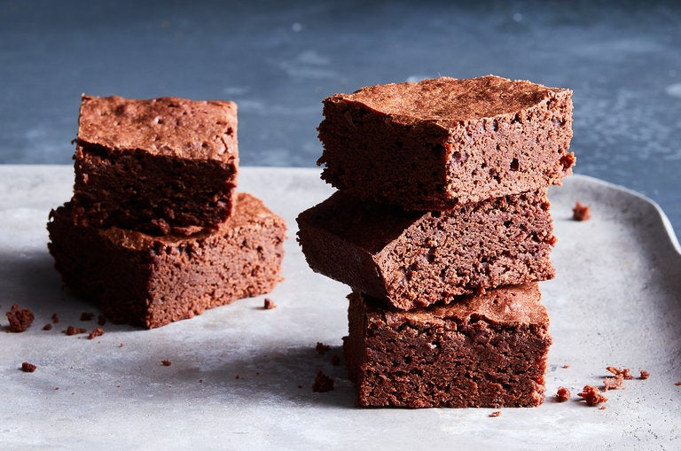

Easy Brownies

Description
The first time I made brownies without my mother was in the late 1960s, using a recipe from Paula Peck, the cookbook writer. Over the years, I tinkered with that and a similar version by Marion Cunningham. As my daughters learned to cook, they experimented a bit further. But we never really strayed from the originals. As long as you keep the flour to a minimum and don't add chemical leavening like baking powder, you will produce a true and beautiful brownie.
Ingredients
- 2 ounces unsweetened chocolate
- 8 tablespoons (1 stick) salted or unsalted butter, more for greasing pan
- 1 cup sugar
- 2 eggs
- 1/2 cup all-purpose flour
- pinch of salt if you use unsalted butter
- 1/2 teaspoon vanilla extract
Directions
- Heat oven to 350 degrees. Combine chocolate and butter in a small saucepan over very low heat, stirring occasionally. When chocolate is just about melted, remove from heat, and continue to stir until mixture is smooth. Meanwhile, grease an 8-inch-square baking pan. If you like, also line it with waxed or parchment paper and grease that.
- Transfer mixture to a bowl, and stir in sugar. Beat in eggs, one at a time. Add flour (and salt and vanilla if you are using them), and stir to incorporate. Stop stirring when no traces of flour remain.
- Pour into pan, and bake 20 to 30 minutes, or until set and barely firm in the middle. Cool on a rack before cutting.